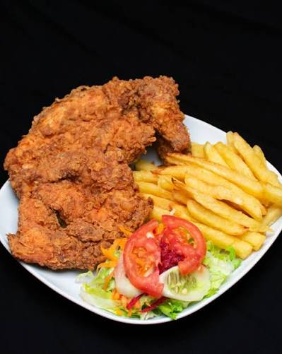

Regresa al recetario
Pollo Broaster
Receta para 8 personas - 4 trutos
Otro de los platos más pedidos en casa. Pollo broaster con papas fritas y ensaladas, a todos nos gusta. Aunque no es complicado de hacerlo, es muy aburrida la preparación. Nadie quiere freir por mucho tiempo ni lavar tanto.
Marinado
- 3 1/2 Cucharadas de vinagre
- 2 1/2 Cucharadas de sal
- 1 1/2 Cucharadas de paprika
- 1 1/2 Cucharadas de ajo en polvo
- 1 1/4 cucharaditas de pimienta negra
- 1 1/4 Cucharadita de comino
- 1 1/4 Cucharadita de oregano
- 3 Cucharadas de mostaza
Rebozado
- 600gr de Harina de Maiz
- 300gr de Chuño
- 2 1/4 Cucharadas de sal
- 2 1/4 Cucharadas de paprika
- 1 3/4 Cucharadas de aAjo en polvo
- 1 3/4 Cucharadas de paprika
- 2 1/4 Cucharaditas de pimienta negra
- 1 1/4 Cucharadita de comino
- 1 1/4 Cucharadita de oregano
Preparación
- Agrega en un bowl, la sal, paprika, ajo, pimienta, comino, oregano, mostaza. Mezclalo.
- Filetea el pollo para que penetre mejor
- Agrega el pollo al marinado. Y dejalo refrigerando por unas horas
- Mientras tanto... Prepara el Rebozado. Mezcla todos los ingredientes en otro bowl.
- Saca el pollo y enharinalo. Deja reposar un poco para que salga el exceso de harina.
- En aceite bien caliente, frielo a fuego bajo y tapalo para que se cocine mejor.
- Escurre bien el aceite y ponlo en una rejilla para que se caiga bien el aceite.
